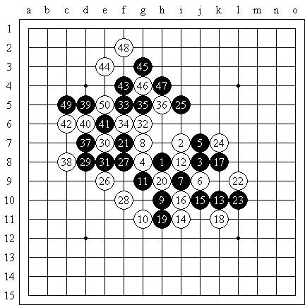
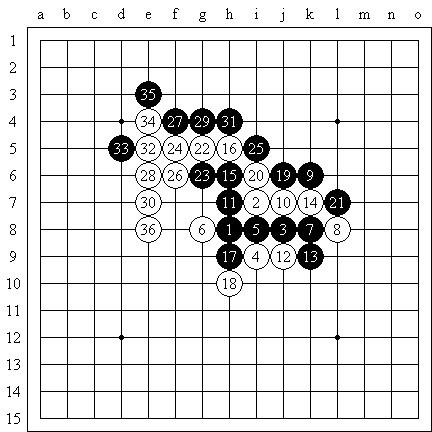
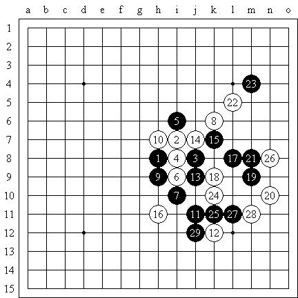
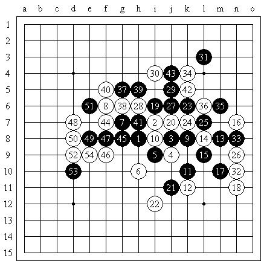
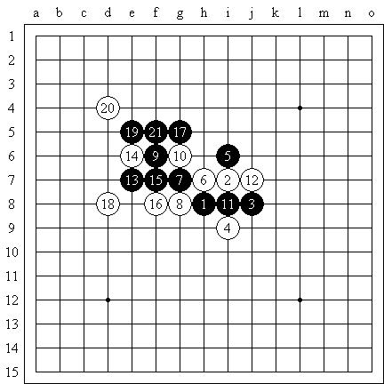
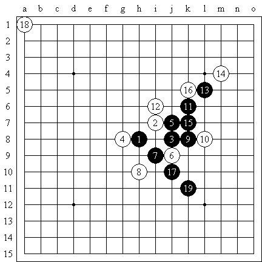

小棋战【恒星】自战棋评
#1 小棋战【恒星】自战棋评 作者：有志青年 发表时间：2008-8-4 16:04:18
【中国连珠网消息：[星月争霸]恒星赛八人循环拚杀，李一全胜再夺恒星盟主，王晨、张弛分获二三名。】
原文地址：http://hi.baidu.com/%C6%C1%B1%CE/blog/item/f29b18084cad2b36e8248834.html
因为学车的日程临时调整，我才有机会参加这次的比赛。尽管准备时间只有两天，但由于前一段时间在复习《五手二打总论》，所以还是有所积累的，另一方面也查看了一些新的研究和强防，觉得对我的恒星局的提高还是有一定帮助的。
这回比赛轮次不多，感觉比较好，对局也都比较清楚，可以做一些分析。但是奖品实在是太囧了……不提了。能够夺取冠军还是很高兴的。
小棋战【恒星】，北京市东城区海运仓社区活动站
恒星局（交换），5A=i9，李一（黑）胜仇云飞（白）（Time）

8一出我就知道我中计了，团体赛时讨论过一个同型变化，有一个简单的解决方案，但是我从未想到演化成这个局面的解决方案，或许云飞也知道我这个人一般只有跌倒三次才会长记性，所以……对于9-17或l8，我没有很明确的想法，因此就开始构思其他的方案，实战中9、11的选择倒也算神来之笔！白棋没先手，又要提防9、11的活二又要考虑黑棋占据17位的应对方案，12似乎是很无奈的选择。13好棋！首先白棋的任何反击都是不成立的，黑棋本身的形状极佳！14实际已经必败（15-17，以下的VCT很容易走出），但我忽然开始犯二，放弃了明确的杀法。18好棋！面对这漂亮的防守，19~21的交换也应该是无奈之举。25开始控制局面，26积极的一手！28！当注意到横10线上的反击时，我毫不犹豫地在29位要到了先手，并保持了下去。可惜面对云飞的防守我始终无法有所建树。随着50手的落下，和棋局面已定，云飞很无辜地拍下了超时的那一手棋钟……
小棋战【恒星】，北京市东城区海运仓社区活动站
恒星局（不换），5A=i6，王晓（黑）负李一（白）

和晓儿姐姐的对局，留下了最简单的必胜，然后……白胜了……7-10是必胜的关键手！9-10的变化我不知道是否有可以阻止必胜的强防？
小棋战【恒星】，北京市东城区海运仓社区活动站
恒星局（交换），5A=i9，李一（黑）胜佟明宇（白）

心不在棋，棋也非棋。
小棋战【恒星】，北京市东城区海运仓社区活动站
恒星局（不换），5A=h7，沈佳时（黑）负李一（白）

在连续否定了两个4之后，我们终于开始了这个该死的变化……看起来她会……我很无奈，直到31手，我靠竟然给防死了，太感动了……后面随便搞了几手，赢了下来。
小棋战【恒星】，北京市东城区海运仓社区活动站

一般来说，6-12是更强的变化，8是容易被忽视的最强防！实战的9太急了，9-i5好！14-15强？16-21唯一！17-d7，19-16，20-d9神之一防！
小棋战【恒星】，北京市东城区海运仓社区活动站
恒星局（交换），5A=i9，李一（黑）胜王晨（白）

对手的策略选择失误，12以下的VCT对我来说不成问题。
小棋战【恒星】，北京市东城区海运仓社区活动站
田汉法胜李一（弃权）
在我保证冠军的情况下，急着回家。这盘棋是我弃权了，和中国连珠网上记录的不一样，但是对田老师而言不能有失公正。全胜是很诱人的，但那仅仅是一个结果而已。
#2 Re:小棋战【恒星】自战棋评 作者：百医天使 发表时间：2008-8-4 22:06:50
最后一个图是不是错了，不知道我说的对不对，十七不是禁手吗？#3 Re:小棋战【恒星】自战棋评 作者：屏蔽 发表时间：2008-8-8 16:23:44
17禁手？什么状况？……